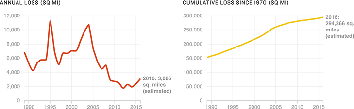

Amazon Rainforest’s Deforestation Rate Rises For Second Straight Year
The Brazilian government introduced policies to curb deforestation in 2004, leading to several years of sharp decline in the deforestation rate. However, the recent uptick means that the Amazon is losing rainforest at its highest rate since 2008.
